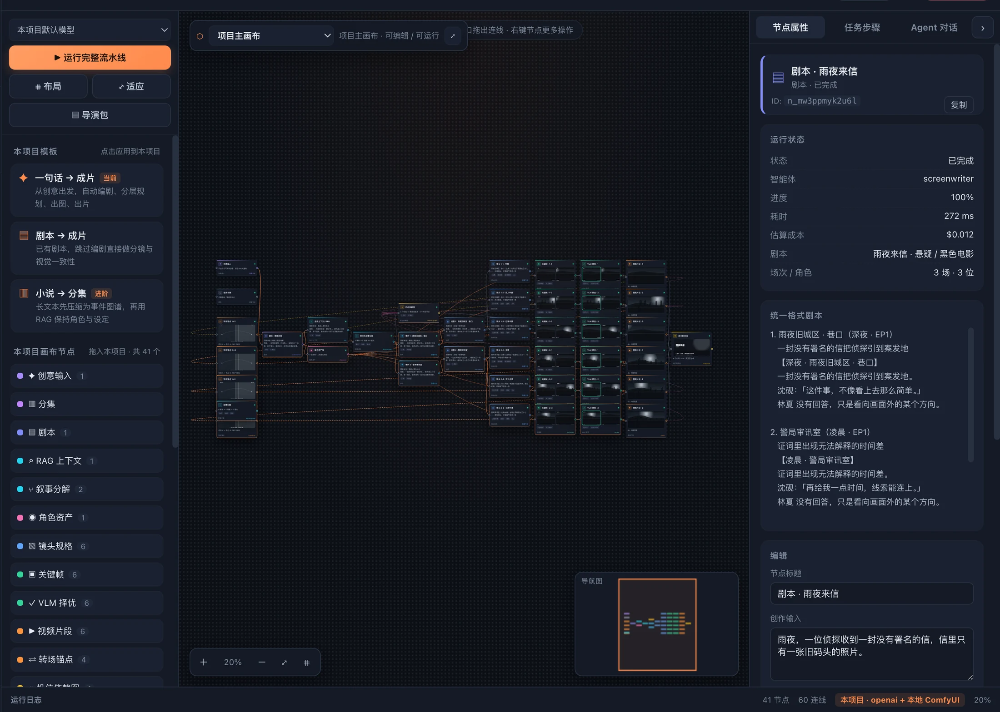
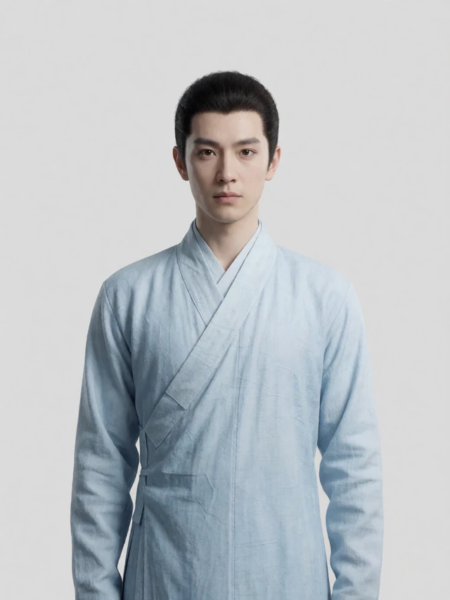
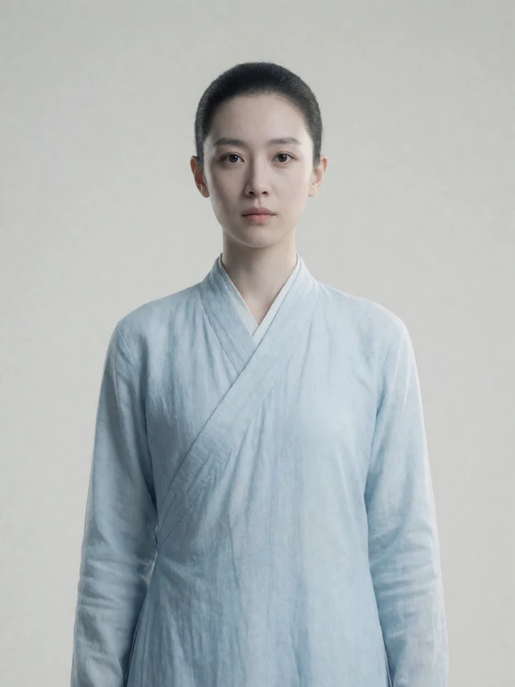
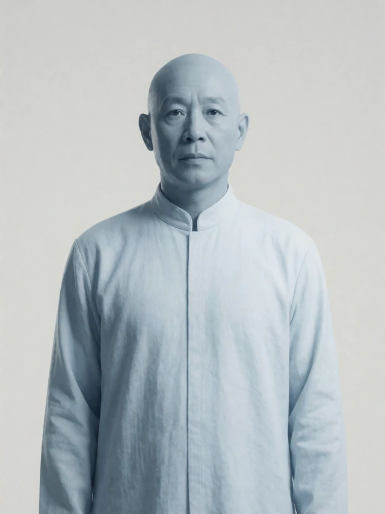
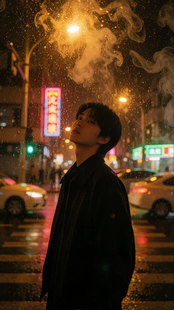
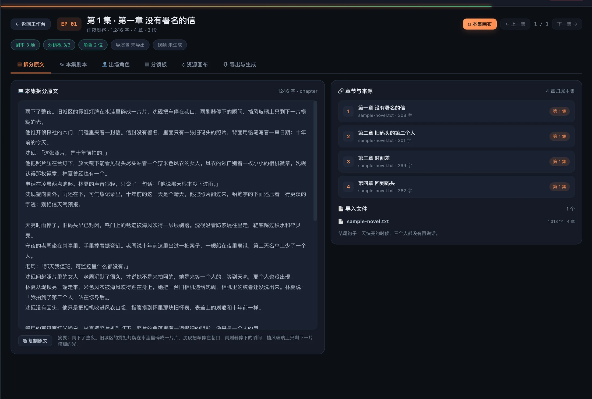
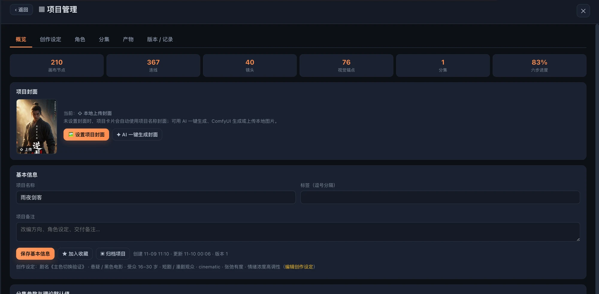

一本小说，塞不进一个 prompt
章节、伏笔、人物关系在长上下文里被稀释。写到第 3 集，前面的人已经换了性格，伏笔也忘了收。
模型已经能画出惊艳的单帧。真正拖住创作者的是「把 40 个镜头讲成同一个故事」——人物、空间、节奏和交付物，任何一处断掉都要推倒重来。
章节、伏笔、人物关系在长上下文里被稀释。写到第 3 集，前面的人已经换了性格，伏笔也忘了收。
没有定妆资产、没有视觉锚点，正反打像换了演员；同一场景的光线、服装与道具也无法跨镜头对齐。
分镜文档在表格里，提示词在笔记里，图片在文件夹里。改一个镜头要同步三个地方，返工比创作更久。
片段、封面、角色图、字幕、导演包各自为政。交接给后期或导演工作台时，只能靠人肉对齐命名与顺序。
灵犀漫剧不承诺「一键出神作」。它做的是把散落的环节接回同一条流水线：一个项目、一张画布、一份可回溯的状态。
每一步都对应一个可执行的智能体任务：产物写回画布节点，状态持久化，失败可重试。你不必一次跑完——改哪一步，就从哪一步重跑。
上传一个或多个 txt / md，章节自动编号并对齐剧集；也可以给一句话构想，让 AI 先写大纲，再逐章生成全文。
按章节、字数或场景段落三种策略拆分，控制每集字数与总集数；每集自动生成摘要与结尾钩子，支持分季与跨季移动。
把分集梗概写成统一格式剧本：内外景、地点、时间、时长、出场人物、目标、冲突、转折与可拍摄的正文行。
用 BM25 从原文召回角色，逐条给出原文证据；生成正面 / 3/4 侧 / 侧面定妆图，并把角色、动机与伏笔写回 RAG 上下文。
六种版式的分镜板、每镜景别 / 机位 / 运镜 / 时长；关键帧 best-of-k 生成，VLM 按视觉保真与叙事一致择优，机位锚点跨镜传播。
画面定版后逐镜头提交 ComfyUI 出视频，ffmpeg 拼成片；或跳过渲染，直接导出可被导演工作台读取的 .mmxpack.zip。
不是黑盒。每个产物都落在画布节点上：剧本、分镜、候选图、片段、导演包都有明确字段与状态。关掉页面再打开，进度还在；ComfyUI 跑完的任务可以「检查已完成」直接取回，不用重烧。
自动流程给你 70% 的起点，剩下 30% 的「导演判断」留给画布、提示词和重跑。以下都是已经在跑的模块，不是路线图。
节点是任务，连线是数据与视觉依赖。拖动、连线、框选、撤销、自动布局；改一条连线，下游流程立刻跟着变。

角色资产在全片复用：定妆图、造型提示词、音色与参考图挂钩。镜头通过 ref 边引用同一份资产，而不是每次重新描述。

沈砚主角
林夏女主
老周配角九宫格 / 六宫格 / 四宫格 / 条漫四联 / 二十五宫格 / 单图。版式只改排版，不重跑模型；单格画幅恒等于成片画幅。

编剧、分解、RAG、角色、分镜、机位、关键帧、择优、视频、转场、成片、导演、分镜板……编排器只做拓扑分层与并发控制，业务全部在智能体里。
出图 / 视频 / 音频三类工作流独立成库，导入「导出(API)」即可用。提示词沿连线回溯到真正的文本源节点。
# 提交 → 轮询 → 取回
POST /prompt
→ prompt_id
GET /history/{id}
GET /view?filename=…
4 种制片流程策略 + 10 位导演美学。选主色调后，风格进入提示词、调色板、运镜与音频描述，而不只是换个滤镜。
对话框不是另一个系统。它和按钮调用同一套业务函数，改了什么在数据层完全一致；每次执行都记录等价的 HTTP 请求与 curl，方便复刻与排障。
POST /api/projects/:id/step · scope=storyboard · regen=false下面每一张都是本地实例的真实截图，数据来自演示项目「雨夜剑客」：210 个节点、367 条连线、40 个镜头。
七步路线图就在首屏，模型配置状态一目了然。项目卡片带封面、类型、进度与完成标记。
左侧是模板与节点库，右侧检查器查看产物与运行状态。点任意节点，剧本、提示词、候选图与耗时都在眼前。

原文、剧本、出场角色、分镜板、资源画布、导出与生成六个标签页；每集独立产物，章节与剧集精确对应。

节点、连线、镜头、视觉锚点、集数与六步进度；封面三来源、快照、运行记录与产物下载都在同一个面板。
没有构建链，没有框架魔法。一个 Node 进程同时托管静态页面、REST 与 SSE；画布、SVG 分镜、ZIP、PNG 编码、BM25 都是手写的。
静态托管 + API + SSE 共用 45367 端口；端口占用自动顺延，深链直达项目与剧集。
600 项测试覆盖纯逻辑与 HTTP 闭环；论文式(1)–(8) 与代码、默认值一一对应，消融实验可复现。
任意 OpenAI 兼容 LLM；ComfyUI 工作流库管图 / 视频 / 音频；调用失败回退 Mock 并在日志标注。
项目 JSON、资产、快照、音色库全部是本机文件；导出 JSON 即可迁移，删掉目录就彻底删除。
cd lingximanju ./start.sh lingximanju · 无限画布智能体影像工坊 ➜ 本地访问 http://127.0.0.1:45367 ➜ 生成后端 本地 ComfyUI ｜ 未配置时回退 Mock ➜ 最终产物 成片 MP4 ｜ 导演包 mmxpack.zip npm run check check 通过：163 个文件 npm test ℹ tests 600 ℹ pass 600
无账号、无云端；默认只监听 127.0.0.1。
LLM 端点、ComfyUI 工作流、图像接口都可替换。
Electron 打包 macOS / Windows / Linux。
如果你只想要一条 15 秒的炫技视频，云端一键生成更省事。如果你想做完一整部、还能改，下面这张表才是重点。
| 维度 | 手工流程 | 云端一键生成 | 灵犀漫剧 |
|---|---|---|---|
| 长篇小说 → 分集 | 人肉切分、Excel 管理 | 通常不支持长文本 | 三种策略 + 章节映射 + 分季分集 |
| 角色一致性 | 靠记忆和参考图 | 单次生成内参考 | 定妆资产 + ref 引用 + 锚点传播 |
| 分镜可编辑 | 文档与表格 | 黑盒，改一处全重来 | 画布节点 + 6 种分镜版式 |
| 生成后端 | 无 | 厂商锁定 | 本地 ComfyUI + 任意 OpenAI 兼容 LLM |
| 数据归属 | 本地 | 上传云端 | data/ 目录，默认不出本机 |
| 交付物 | 人肉整理 | 单个视频文件 | MP4 + 导演包 + 分镜板 + 资产 |
| 断点续跑 | 手工重做 | 整段重新生成 | 节点级重跑 / 增量复位 / 对账取回 |
| 成本可见性 | 工时 | 按次计费 | 本机 GPU + 每步 token 与耗时统计 |
关于模型、硬件、数据与边界，先把话说清楚。
127.0.0.1，项目、资产、快照与配置都在本机 data/。只有你主动设置 HOST=0.0.0.0 才会开放局域网访问。*.mmxpack.zip 导演包、每段分镜板、角色定妆图、剧本 Markdown、项目 JSON。导演包可被 MiniMax H3 Director 等 ComfyUI 导演工作台直接导入。npm install、没有构建、没有版本地狱。代价是画布、SVG、ZIP、PNG 编码、BM25 都要自己写——但这部分正是可审计、可控的地方。从项目列表开始，先跑一遍内置示例，再换成你的故事。
Node.js ≥ 18 · 无需 npm install · 首次打开即可用内置示例